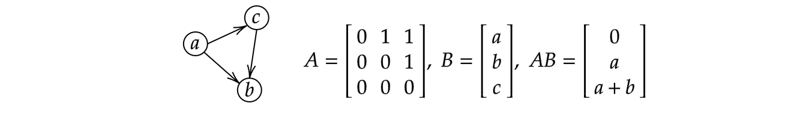

Many applications involve the expressivity of graph data structure such as molecular network and is described in unique non-Euclidean data structure. The model based on graph network can be collectively aggregate information from its topological structure, as well as the dependency between each node. An image, for instance, consists of high-dimensional structure yet can be represented by representative graph which gather its topological dependency such as eyes and mouse are interconnected.
Graph, in general, can by directed: all edges are directed from one node to others, and undirected: can be regard as two directed graph. Other catagorization is the nodes and edges types; homogeneous graph-a graph in which all element of the graph is of the same type; heterogeneous is when graph element is not the same type for nodes and edges. The graph can all so be dynamical which is when the input features or topological structure of the graph vary with respect to time. For example, in subsampling of the graph to make inference only portion of randomized graph nodes and edges.
In general, any neural network can be defined or interpreted as graph network or a complete graph. The key of graph network is that each node in the graph \(N_{u} \in G\) is iteratively update their representation as a function of input vector \(x_{u}\) is edges features and connected node features. It update by accumulating information from their local neighbors which is done by message passing layers. Another key of graph network is the permutation-invariant of all reduce operation which aggregate information from their neighborhood. In other word, altering the graph node \(N_{u}\) and edges \(E_{u} \in G\) do not alter the final output of the reduce operation or their next interating operation. For example, PROD, SUM and MAX are permutation-invariant or we can say that \(y( PX) =y( X)\) where \(P\) is permutation matrix. Message passing neural networks formalism express the layers in graph network in general as the function \(\Phi \) :\begin{equation} h_{t+1}^{n} =\Phi \left( h_{t}^{n} ,\sum{}_{v\in N_{u}} \psi ( x_{u})\right) \end{equation} where \(\sum \) is any permutation-invariant operate (not just SUM and depend on the desing approach) over all set of node \(v\in N_{u}\). \(\Phi \) in this case can be any differentiable function, e.g. dense layer or convolution and \(\psi \) is message function, e.g. matrix multiplication. This is saying that the new representation of graph is a function of previous graph at time \(t\) and masseges from local node \(v\). This is one update on one node in graph and can be used for downstram task later on. For example in naive binary classification, the last output from graph node \(n\) is computed as \(x_{n} =\sigma \left( h_{t}^{n} \theta _{t} +b_{t}\right)\) and the binary ross entropy loss \(L( x_{n})\) is computed. We can also view graph network like convolution on image which consider imediate local neighborhood of the pixel and downsampling it to some representation which is similar to how we view representation of graph node. (Yujia Li et al. 2015) introduced Gated GNNs combining gated recurrent unit GRU cell with GNNs. The state of the graph \(h_{t}^{l+1}\) is interpreted as hidden states of GRU cell with learnable parameters \(\lambda \), the update rule is \begin{equation} h_{t+1}^{n} =\mathbb{GRU}\left( h_{t}^{n} ,\sum{}_{v\in N_{u}} \lambda h_{t}^{n}\right) \ \end{equation}In implementing the graph, we can use adjacency matrix \(A\) is \(n\) by \(n\) matrix where \(n\) is the number of node in the graph for example :

Combine these together, we can summarize procedures as follow: Concatenate the node state at time step \(t\) for node \(n_{0}\) to \(n_{k}\) we have matrix \(H_{t}\) is \(N\) by \(D\) matrix, is the number of node and dimension of state respectively. We can compute matrix \(R_{t}\) to be passed as an input to recurrent network or GRU as \(R_{t} =\Sigma _{k} A\lambda _{k} H_{t}\) and that the next step of representation of the graph is \(H_{t+1} =\mathbb{GRU}( H_{t} ,R_{t})\) or, in vanilla RNN is \(H_{t+1} =\sigma ( UH_{t} +WR_{t})\) where \(( U,\ W)\) is the parameters. In general, to use output from the graph we can either use one node classification: \(Z_{i} =f\left( h_{t}^{i}\right)\) or graph classification: \(Z_{G} =f\left( \Sigma _{i\in N_{u}} h_{t}^{i}\right)\) or link prediction: \(Z_{i}{}_{j} =f\left( h_{t}^{i} ,h_{t}^{j} ,e_{ij}\right)\) where \(h^{i}\) is connected to \(h^{j}\) by edge \(e_{ij}\). GraphSage (Hamilton et al. 2017) introduce ways to reduce computation in large graph network by subsampling neiborhood of the graph instead of inference full graph. Other than this, in gathering summation we can define weighting hyperparmeters \(\alpha _{ij}\) taking acount for how other node is important, GCNs do this by using: \begin{equation} h_{t+1}^{n} =\Phi \left( h_{t}^{n} ,\sum{}_{v\in N_{u}} \alpha _{ij} \psi ( x_{u})\right) \end{equation}GAT (Velickovic et al.) use this constant as function of graph nodes and their corresponding edges and is learnable: \(\alpha _{ij} =\exp( \alpha _{ij}) /\Sigma _{v\in N_{u}} \alpha _{ij}\) is self-attention machanism. It is also obvious that the resulted matrix of \(A\lambda _{k} H_{t}\), the output would potentially larger by layer. Mean-pooling normalize this by additionally mutiply degree matrix \(D^{-1}\) of adjacency matrix \(A\): \(R_{t} =\Sigma _{k} D^{-1} A\lambda _{k} H_{t}\) where \(D_{ii} =\Sigma _{j} A_{ij}\). Graph Convolution network (GCN Kipf and Welling 2017) use symmetric normalization as \(H_{t+1} =\sigma \left( D^{-1/2} AD^{-1/2} H_{t} \lambda \right)\) can be written as \begin{equation} h_{t+1}^{n} =\sigma \left( h_{t}^{n} ,\sum{}_{v\in N_{u}} \lambda h_{t}^{n} /\sqrt{| N_{v}| | N_{n}| }\right) \ \end{equation} Implementation can be found in my supplemental Github reprository given in the homepage.
created with
Website Builder Software .